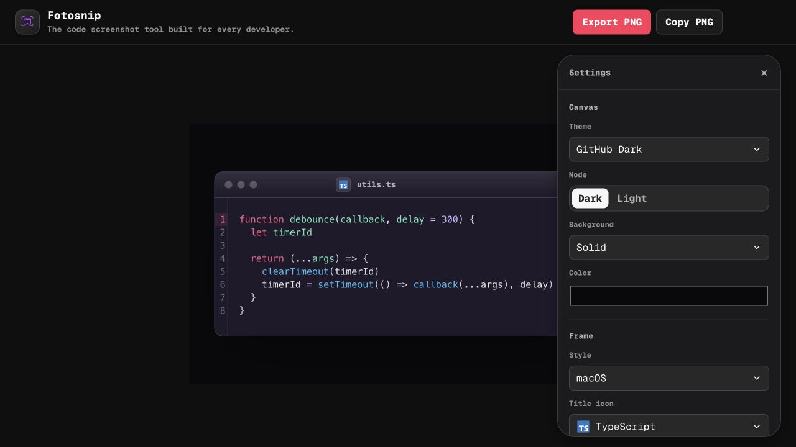

1. Document utility rail
Replace the logo-led product header with a compact work surface: wordmark, local-draft status, and export actions. This makes the first row feel operational and leaves the canvas as the primary visual object.
DESIGN REVIEW / 13 JULY 2026
A focused review of the header, platform framing, preset management, and export feedback. The intended result is a quieter creator tool whose hierarchy comes from utility and craft rather than decorative branding.

Replace the logo-led product header with a compact work surface: wordmark, local-draft status, and export actions. This makes the first row feel operational and leaves the canvas as the primary visual object.
Give every frame its own height, control order, and visual density. macOS gets authentic traffic-light colors; Windows gets a 32px title bar and full-height caption controls; GNOME and KDE use their native right-side controls.
Make the preset name the apply target. Reveal rename only when requested, and keep edit/delete actions as small icon buttons with accessible labels and tooltips.
Show short feedback directly below the action that completed. This preserves layout stability while giving export and clipboard operations immediate confirmation.
Platform references: Windows title bar guidance, GNOME header bars, Apple toolbars, and Apple menus.